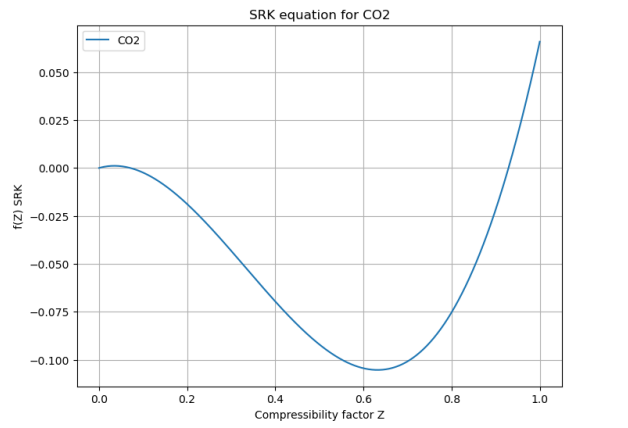
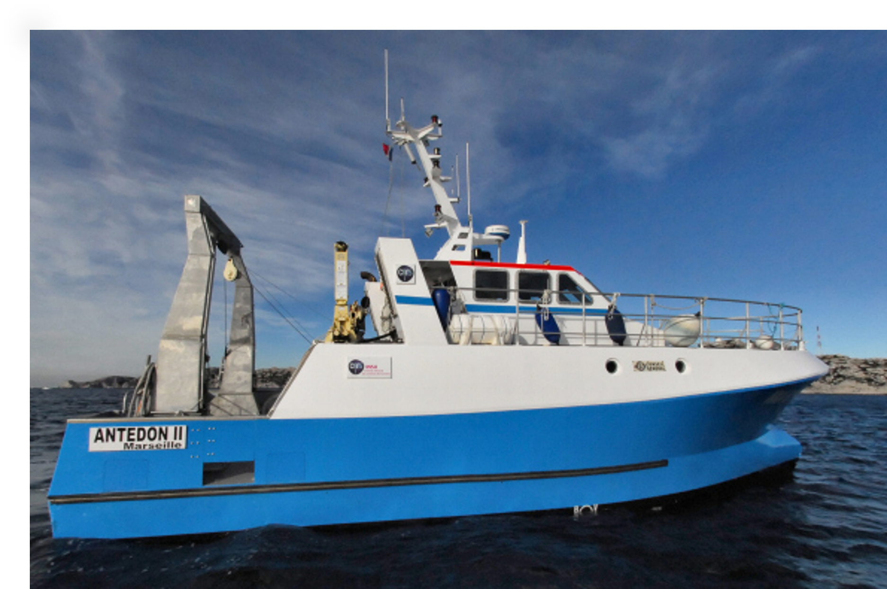
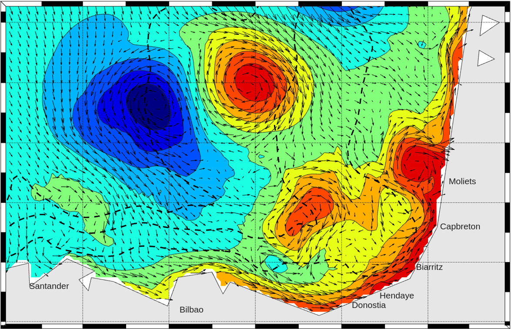

Hello!
My name is Dorian LAPEYRE and I am a Marine Sciences Master's student at Aix-Marseille University, specializing in Physical and Biogeochemical Oceanography at OSU Pythéas. Welcome to my website!

At Aix-Marseille University, specializing in Physical and Biogeochemical Oceanography
Find my up-to-date curriculum vitæ as well as my modeling project.
I am a Master 2 student looking for an end-of-studies internship.
My name is Dorian LAPEYRE and I am a Marine Sciences Master's student at Aix-Marseille University, specializing in Physical and Biogeochemical Oceanography at OSU Pythéas. Welcome to my website!
My post-baccalaureate academic journey began in the Engineering Prerequisites Program (CPGE) at Lycée René Cassin in Bayonne, focusing on the PCSI track (Physics, Chemistry, Engineering Sciences). This year was pivotal in developing my work capacity, rigor, discipline, as well as my flexibility and resilience in the face of failure. I learned great lessons from it that I continue to apply on a daily basis.
After a year of CPGE and upon the recommendation of my professors, I joined a Bachelor's degree in Physics and Chemistry at UPPA in Anglet. There, I discovered a genuine passion for physics, particularly regarding the reflections this science brings to concepts such as measurement, time, observations, or our perception of natural phenomena. Beyond these philosophical aspects, I primarily acquired a solid foundation in mechanics (both Newtonian and quantum), electromagnetism, wave physics, and mathematics, allowing me to tackle a multitude of problems with a sufficient core of knowledge.
Once my second year was completed, I entered the third year of engineering school in Mechanical Engineering at INSA Toulouse. This period allowed me to develop my ability to work in groups, methods for approaching complex problems, my adaptability, and skills in numerical modeling (CAM, CAD), mechanics, logical systems, tolerancing, and strength of materials. Notably, I secured an exchange semester at Keio University in Tokyo focusing on systems engineering.
After completing my third year, I nevertheless chose to return to a final year of my Bachelor's degree (L3) in Physics and Chemistry in Anglet with the hope of joining an oceanography Master's program. During this time, I completed an end-of-degree internship at the SIAME laboratory within the IVS (Wave-Structure Interactions) team, which made me more than eager to pursue such Master's programs. I subsequently completed my Bachelor's degree with highest honors (Mention Très Bien), finishing top of my class.
It is against this backdrop that I chose to join the Master's in Marine Sciences at Aix-Marseille University in the OPB (Physical and Biogeochemical Oceanography) track. I discovered a true passion there. From the numerical resolution of partial differential equations to the study of major biogeochemical cycles, along with the utilization of CROCO codes, I have truly found my vocation.

Soave-Redlich-Kwong
Learn more →
Measurements in biological oceanography
Learn more →
3D Ocean Modeling
Learn more →
Offshore measurements
Learn more →